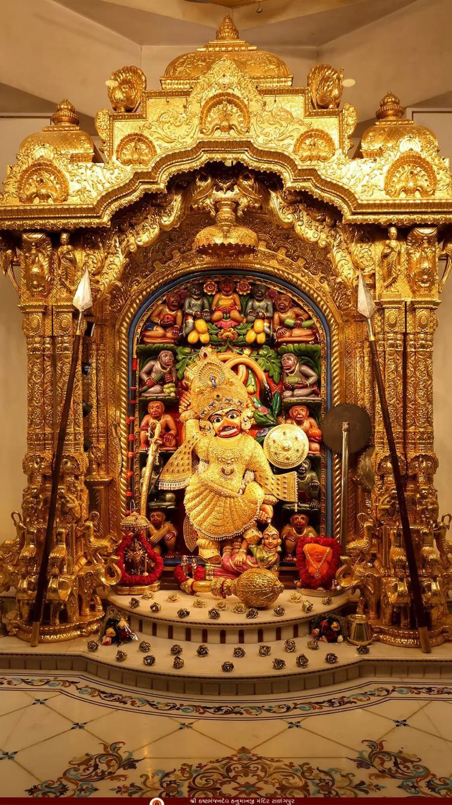

Krishna is a major deity in Hinduism, worshipped as the eighth avatar of Vishnu and as the supreme God. He is revered as the god of protection, compassion, and love, and is a central figure in the Mahabharata, where he delivers the Bhagavad Gita. Key aspects of his life include his birth in a prison,his childhood in Vrindavan, his role in the Kurukshetra war, and his establishment of a kingdom in Dwarka as the god of protection, compassion, and love, and is a central figure in the Mahabharata, where he delivers the Bhagavad Gita. Key aspects of his life include his birth in a prison,his childhood in Vrindavan, his role in the Kurukshetra war, and his establishment of a kingdom in Dwarka as the god of protection, compassion, and love, and is a central figure in the Mahabharata, where he delivers the Bhagavad Gita. Key aspects of his life include his birth in a prison,his childhood in Vrindavan, his role in the Kurukshetra war, and his establishment of a kingdom in Dwarka the Bhagavad Gita. Key aspects of his life include his birth in a prison,his childhood in Vrindavan, his role in the Kurukshetra war, and his establishment of a kingdom in Dwarka as the god of protection, compassion, and love, and is a central figure in the Mahabharata, where he delivers the Bhagavad Gita. Key aspects of his life include his birth in a prison,his childhood in Vrindavan, his role in the Kurukshetra war, and his establishment of a kingdom in Dwarka as the god of protection, compassion, and love, and is a central figure in the Mahabharata, where he delivers the Bhagavad Gita. Key aspects of his life include his birth in a prison,his childhood in Vrindavan, his role in the Kurukshetra war, and his establishment of a kingdom in Dwarka the Bhagavad Gita. Key aspects of his life include his birth in a prison,his childhood in Vrindavan, his role in the Kurukshetra war, and his establishment of a kingdom in Dwarka as the god of protection, compassion, and love, and is a central figure in the Mahabharata, where he delivers the Bhagavad Gita. Key aspects of his life include his birth in a prison,his childhood in Vrindavan, his role in the Kurukshetra war, and his establishment of a kingdom in Dwarka as the god of protection, compassion, and love, and is a central figure in the Mahabharata, where he delivers the Bhagavad Gita. Key aspects of his life include his birth in a prison,his childhood in Vrindavan, his role in the Kurukshetra war, and his establishment of a kingdom in Dwarka
